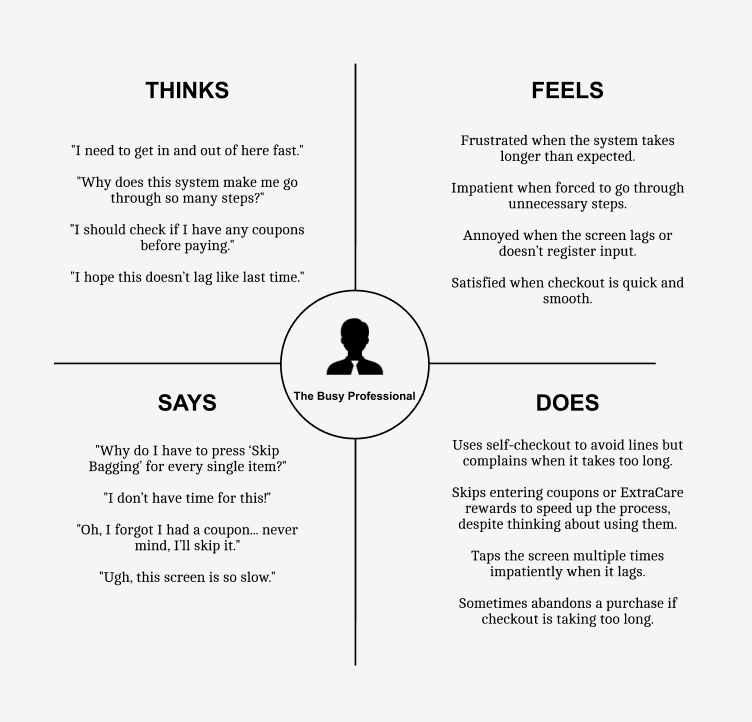
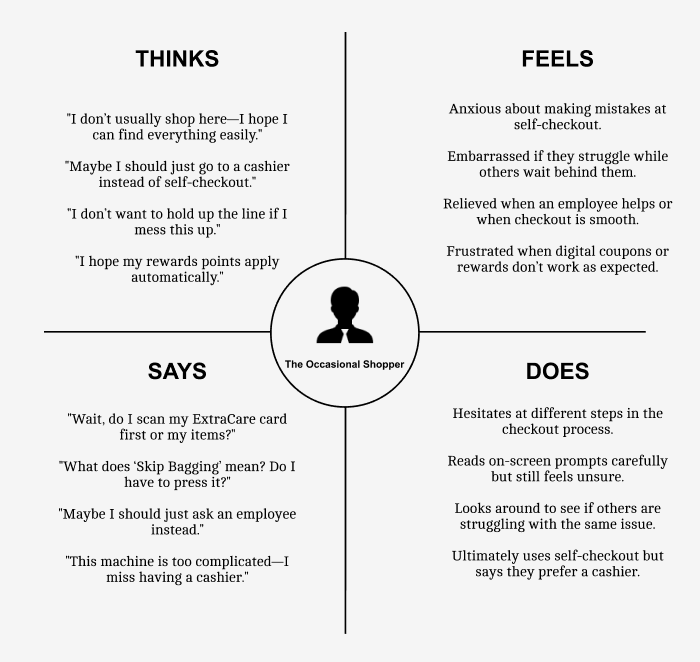
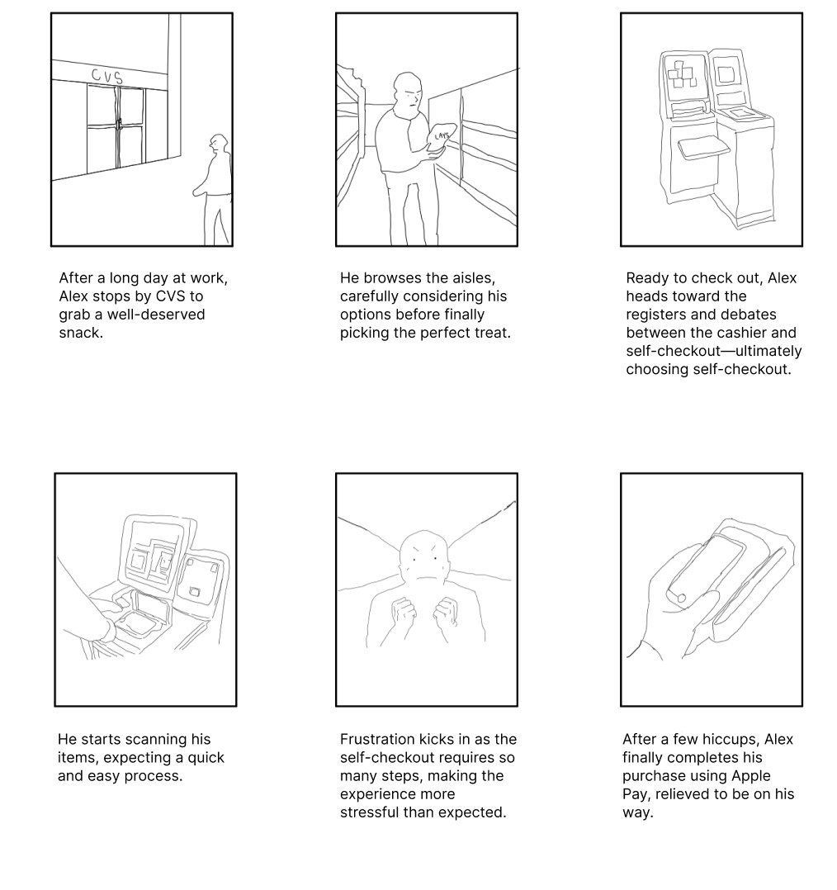

01Role & Team
This was a solo project. I use the CVS self-checkout all the time but had never really thought about it. So I interviewed people and watched them use it, looking for the small things that slow them down or annoy them.
02Context & Problem
We use kiosks, vending machines and self-checkouts almost on autopilot, but the small annoyances add up. At the CVS self-checkout, I wanted to figure out:
- What decisions people have to make at each step
- Which moments throw them off
- What already works well
03Research
I interviewed and watched three people use a real CVS kiosk. Five things kept coming up:
Phone number
Typing in a 10-digit number pulls people out of the flow.
One item
Scanning a single item is quick and easy.
Lots of items
Hitting “Skip Bagging” over and over gets old fast.
Too many prompts
Coupons, donations, receipts. Every extra question breaks focus.
Lag
Any delay on the screen makes people anxious.
If your phone number was already linked to your ExtraCare card, you wouldn’t have to type it in at all.
04Process
I made two personas to see how the same checkout feels to different people.


Then I storyboarded the checkout from the Busy Professional’s point of view:

Walking through it as someone else taught me more than staring at the screens did.
05Solution
These are ideas CVS could try, based on what my participants told me. The project was mostly about research, so these aren’t finished designs.
Skip Bagging
ProblemYou have to tap “Skip Bagging” for every item.
IdeaAsk once, then skip it for the rest of the order.
ExtraCare login
ProblemEntering your phone number and your ExtraCare card are separate steps.
IdeaLink the phone number to ExtraCare automatically.
06Learnings
Everyone uses the same screen differently. People bring their own habits, patience and expectations to it.
Watching people actually use the kiosk changed how I think about design. I used to start with the screens. Now I try to start with the person.